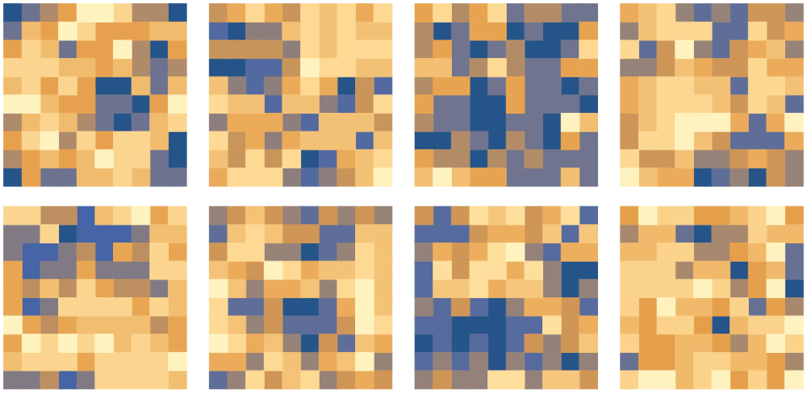
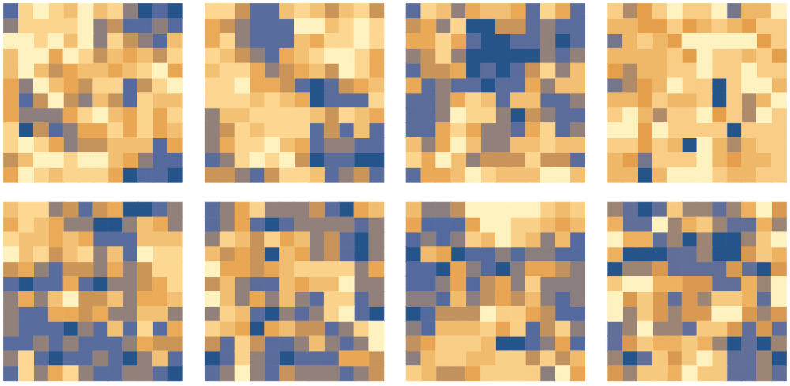
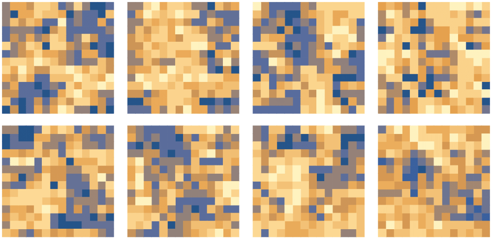

Sample configurations of quartic interaction field theories generated using normalizing flows for Independence Monte Carlo



Marcus Raetz
Sample configurations of quartic interaction field theories generated using normalizing flows for Independence Monte Carlo



Excerpt from David and Stephanie Lewis' 1969 essay, Argle and Bargle argue over a hole in a piece of Gruyère cheese or: black hole information boundary
"Bargle: How can something utterly devoid of matter be made of matter?
Argle: You’re looking for the matter in the wrong place. (I mean to say, that’s what you would be doing if there were any such things as places, which there aren’t.) The matter isn’t inside the hole. It would be absurd to say it was: nobody wants to say that holes are inside themselves. The matter surrounds the hole. The lining of a hole, you agree, is a material object. For every hole there is a hole-lining; for every hole-lining there is a hole. I say the hole-lining is the hole.
Bargle: Didn’t you say that the hole-lining surrounds the hole? Things don’t surround themselves.
Argle: Holes do. In my language, ‘surrounds’ said of a hole (described as such) means ‘is identical with’. ‘Surrounds’ said of other things means just what you think it means.
Bargle: Doesn’t it bother you that your dictionary must have two entries under ‘surrounds’ where mine has only one?"